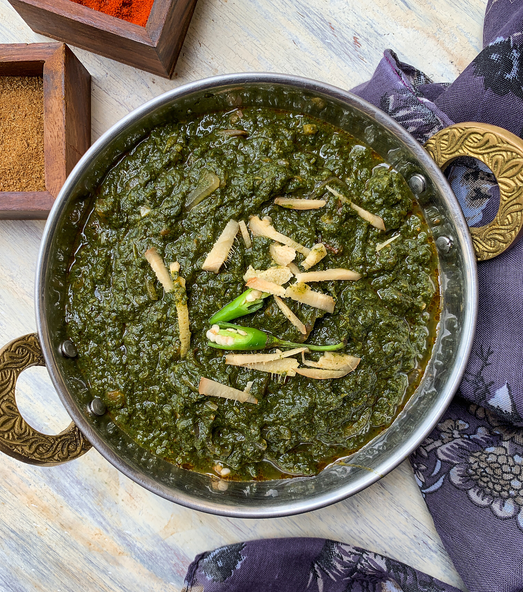

Desi Saag

Description
This Desi Saag is a vegan kale curry made with nutritious leafy greens.
Authentic Punjabi taste. Just simply heat & serve. Medium Spice.
Ingredients
- 1/2 cup butter
- 2 teaspoons cumin seed
- 1 green chile pepper,seeded and diced
- 2 cloves garlic
- 2 tablespoons ground turmeric
- 1 pound chopped fresh mustarg greens
- 1 pound chopped fresh spinach
- 1 teaspoon ground cumin
- 1 teaspoon ground criander
- 1 teaspoon salt
Steps
-
In a large skillet or wok, melt butter over medium-high heat, and cook
and stir cumin seed, chile pepper, garlic, and turmeric until
fragrant, about 2 minutes.
-
Stir in the chopped mustard greens and spinach a little at a time,
adding the tougher parts first (the stems and thicker leaves).
Continue to add greens, and cook and stir until all greens have been
added and all are thoroughly wilted. Stir in the cumin, coriander, and
salt. Cover; reduce heat and simmer until greens are tender, about 10
minutes, adding water as needed to keep the greens moist.